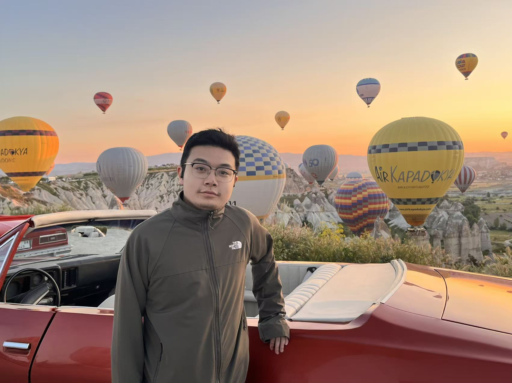
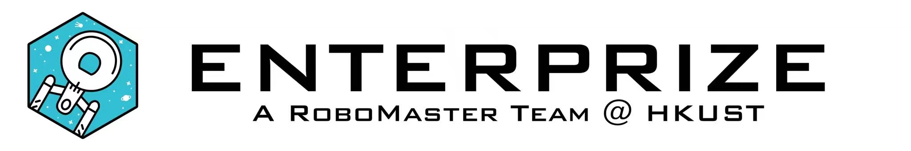
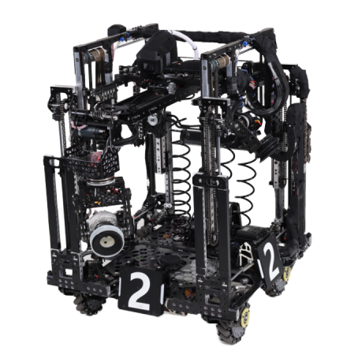

NeurIPS 2026
The Hong Kong University of Science and Technology
Tianrui Zhang.
I am a PhD candidate at HKUST, advised by Prof. Dan Xu. My research focuses on vision-language large models (VLLMs) and robotics, with a particular interest in how agents interact with their environments.
Previously, I interned at SenseTime Research. Beyond research, I have led the mechanical department of HKUST’s RoboMaster team, ENTERPRIZE.

Selected research
* Equal contribution
arXiv 2025
CVD-STORM: Cross-View Video Diffusion with Spatial-Temporal Reconstruction Model for Autonomous Driving
Controllable multi-view driving video generation and 4D scene reconstruction, connected through a reconstruction-trained VAE and a Gaussian Splatting decoder.
BibTeX
@article{zhang2025cvd,
title = {CVD-STORM: Cross-View Video Diffusion with
Spatial-Temporal Reconstruction Model for Autonomous Driving},
author = {Zhang, Tianrui and Liu, Yichen and Guo, Zilin
and Guo, Yuxin and Ni, Jingcheng and Ding, Chenjing
and Xu, Dan and Lu, Lewei and Wu, Zehuan},
journal = {arXiv preprint arXiv:2510.07944},
year = {2025}
}Background
Education
Sep 2026 — Present
Hong Kong University of Science and Technology
PhD candidate, Computer Science and Engineering
Advisor: Prof. Dan Xu
2022 — 2026
Hong Kong University of
Science and Technology
Undergraduate studies in
Computer Science & Mathematics
Research experience
Jun 2025 — Aug 2026
SenseTime Research
Research internship
Multi-view video generation and scene reconstruction, including CVD-STORM.
Honors & scholarships
The HKUST Top Engineering Scholars Award
One of only three undergraduate recipients of this distinction.
HKUST Academic Achievement Medal
2026
Hong Kong PhD Fellowship
2026/27
HKUST RedBird PhD Recruitment Award
Dean’s List
Eight times
HKUST Admission Scholarship
University’s Scholarship Scheme for Continuing Undergraduate Students
Three times
Chiaphua Industries Limited Scholarships for Chinese Mainland Undergraduate Students
HKSAR Government Scholarship Fund — Talent Development Scholarship
Three times
RoboMaster University Championship — Regional First Prize
2023, 2024 · Hong Kong, Macao, Taiwan & Overseas Region · Team award
RoboMaster University Championship — Final Tournament Second Prize
2023, 2024, 2025 · Team award
Robotics & open source
Mechanical Department Lead · 2024

I led the mechanical department of HKUST RoboMaster Team ENTERPRIZE in 2024. My work focused on mechanical design for competition robotics, alongside leading the department’s engineering work.
Team achievements · National finals second prize, 2023–2025; regional first prize, 2023 & 2024.


Open-source project
RoboMaster 2024 Engineer Robot
Our open-source release includes the robot’s technical report, mechanical designs, and a custom controller.
Technical report & open-source designs